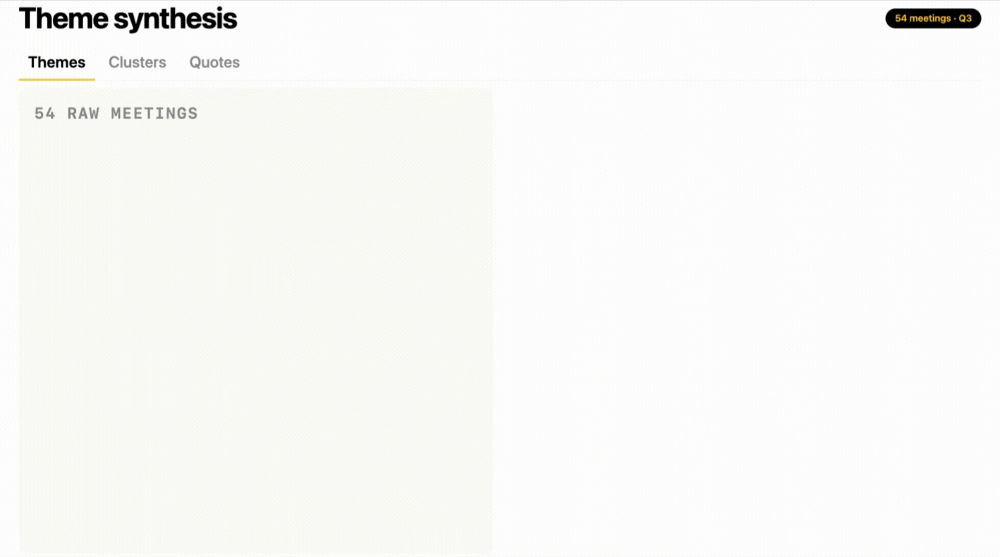
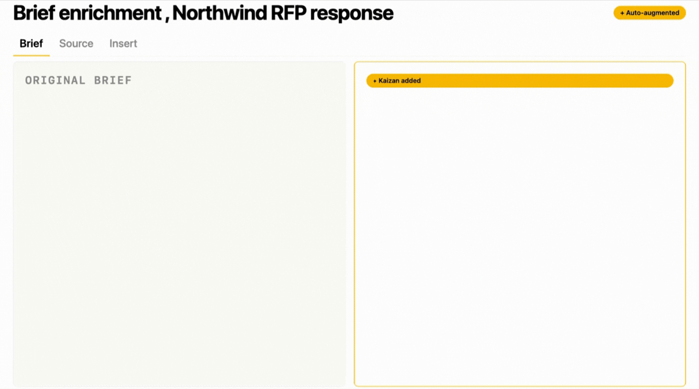
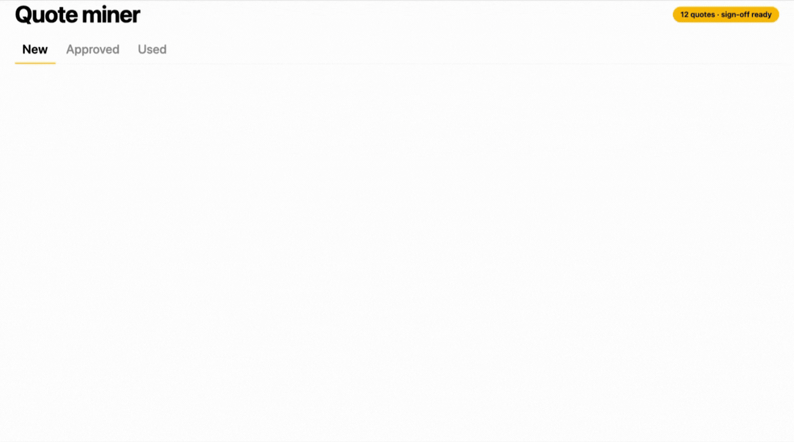

FOR · STRATEGY, CREATIVE, MARKETING
Spend your hours on the work. Not catching up to it.
Every conversation, decision, and signal on every client - ready the moment the brief lands.
Being across so many clients, I really struggled to make sure I had a good understanding across all of our different client interactions and touch points. Now I have much greater visibility into what’s going on day-to-day - without the subjectivity of what my teams or even our clients are telling me.
Why strategy, creative and marketing leaders love Kaizan
The things Strategy, Creative and Marketing Leaders love.
01
Walk into every brief with full context.
Every meeting, every decision, every conversation - searchable and summarisable before the brief even lands on your desk.
02
Market and competitor intel as a creative input.
Where the client is winning, where they're losing, what their audience is saying - feeding the work, not buried in an account team's CRM.
03
The "get me up to speed" hours, gone.
New brief on a client you've not worked on? Joining a pitch team mid-flight? Ask Kaizan. Stop billing context-gathering as if it were the work.
04
AI Helpers monitoring market and competitors 24/7.
Competitor moves, audience shifts, cultural signals - all current the moment a brief lands, so you skip the scramble to catch up.
How Kaizan helps
Strategy, creative and marketing - all running off the same live signal.
01
Theme synthesis
Cluster the language across 50+ meetings into the three themes that matter for next quarter’s strategy.

02
Brief enrichment
Every brief auto-augmented with the last 30 days of client context: meetings, references, language patterns, hot buttons.

03
Quote miner
Every flattering thing a client said about working with you - surfaced, attributed, ready for sign-off and the next case study.

FAQs
The questions strategy, creative and marketing leaders ask us.
Can I search across every meeting, brief, and document for a given client?
Every meeting, brief, email and chat on a client is searchable in one place. You ask the question - Kaizan returns the answer with the source underneath, not just a list of links to wade through.
Will it summarise long client histories on demand?
Long client histories summarise on demand, scoped to the question you're actually asking - the whole relationship, a single campaign, one stakeholder, a specific competitor mention. You stop billing context-gathering as if it were the work.
Can I pull insights straight into a creative brief or strategy doc?
Insights, quotes and source-linked references pull directly into the tools your team writes briefs and strategy in, so the live signal lands inside the document rather than in a separate window your strategist has to flip to.
How fresh is the market and competitor intel?
Market and competitor intel is monitored continuously and refreshed automatically. The moment a brief lands, you're working from current signal - not a deck someone updated three quarters ago.
Not quite you?